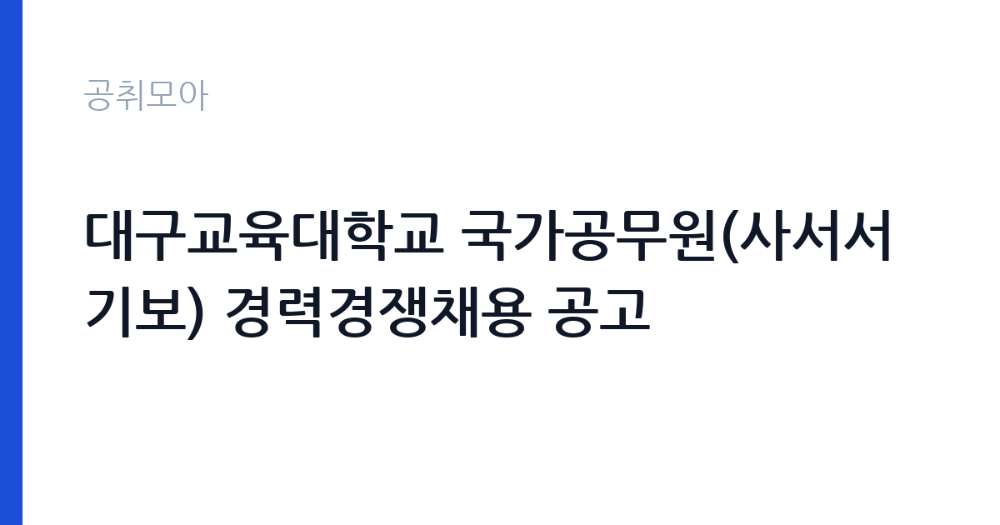

[국가기관] 대구교육대학교 국가공무원(사서서기보) 경력경쟁채용 공고
대구교육대학교 · 대구 · 마감 2026-10-09 (D-16) · 출처 나라일터

한눈에 보는 모집 조건
| 기관 | 대구교육대학교 |
|---|---|
| 공고명 | 대구교육대학교 국가공무원(사서서기보) 경력경쟁채용 공고 |
| 고용형태 | 정규직 |
| 근무지 | 대구 |
| 게시일 | 2026-09-23 |
| 마감일 | 2026-10-09 (D-16) |
지원자격, 이렇게 읽으세요
- 사서서기보 1명
- 접수 ~2026-10-09 마감
- 세부 조건은 원문 공고문 확인
사서직 경력경쟁채용은 통상 사서 자격증과 관련 학력, 실무 경력을 요구합니다. 사서서기보는 8급 상당 직급으로 정식 자격요건과 경력 산정 기준, 가산점 사항은 원문 공고문에서 반드시 확인하셔야 합니다. 공무원 결격사유에 해당하지 않아야 하며 세부 응시자격은 대구교육대학교 공고 제2026-113호 전문을 참고하시기 바랍니다.
이 공고의 포인트
이 공고의 강점은 국립대학 소속 국가공무원이라는 신분입니다. 교육공무직이나 기간제 사서가 아닌 정식 국가공무원으로 임용되며 대학 도서관이라는 안정적인 근무환경이 장점입니다. 사서 자격증 소지자에게 열린 문이 넓지 않은 편이라 자격을 갖춘 분께는 놓치기 아까운 기회입니다. 대구 근무를 희망하는 사서직 준비생이라면 우선 검토하실 만합니다.
전형은 어떻게 진행되나
경력경쟁채용은 서류전형과 면접시험으로 진행되는 것이 일반적입니다. 필기시험 부담이 적고 서류와 면접, 경력 검증이 중심이 됩니다. 세부 전형 단계와 일정, 제출서류는 원문 공고문에서 확인하시기 바랍니다. 마감일은 10월 9일이니 추석 연휴 전후 서류 발급 일정을 감안해 미리 준비하시기 바랍니다.
원문에서 확인한 전형 방식
대구교육대학교 공고 제2026–113호 대구교육대학교 국가공무원(사서서기보) 경력경쟁채용 공고 대구교육대학교에서는 ｢공무원임용시험령｣ 제3조 및 제47조에 따라 우수 인재의 공직 유치를 위한 국가공무원 경력경쟁채용시험을 다음과 같이 공고하여 시행하오니 많은 응시 바랍니다. 2026년 9월 23일 대구교육대학교 총장
이런 분께 추천해요
- 사서 자격증을 보유하고 국립대학 도서관 근무를 희망하는 분께 적합합니다.
- 도서관과 기록물, 학술정보 실무 경력이 있는 분께 추천합니다.
- 대구에서 국가공무원으로 안정적으로 근무하고 싶은 분께 어울립니다.
지원 전 체크리스트
- 사서 자격증과 학력, 경력 요건을 원문에서 확인했습니다.
- 경력 산정 기준일과 증빙서류 목록을 확인했습니다.
- 가산점과 우대사항 해당 여부를 점검했습니다.
- 마감일과 접수 방법, 문의처를 원문에서 확인했습니다.
모집 일정과 제출 타이밍
마감일은 10월 9일로 접수기간이 약 2주입니다. 경력증명서와 자격증 사본 등 발급에 시간이 걸리는 서류가 있으므로 접수 첫 주에 준비를 마치시는 것을 권합니다. 서류전형 이후 면접 일정은 개별 안내되니 연락 수단을 유지하시기 바랍니다.
직무 이해하기: 국가기관
사서서기보는 대학 도서관에서 자료 선정과 정리, 대출과 열람 서비스, 전자자원 관리, 이용자 교육을 담당합니다. 대구교육대학교 도서관은 예비교원 양성을 지원하는 교육 특화 장서를 갖추고 있어 교육학 자료에 대한 이해가 실무에 도움이 됩니다. 8급 상당 실무자로서 현장 서비스와 장서 관리의 중심 역할을 맡게 됩니다.
자기소개서 작성 팁
경력경쟁 자기소개서에서는 사서 실무 경험을 구체적으로 쓰시는 것이 핵심입니다. 담당 장서 규모와 이용한 시스템, 이용자 서비스 개선 사례를 수치와 함께 서술하시기 바랍니다. 대학도서관과 교육자료에 대한 이해를 보여주면 좋은 평가를 받을 수 있습니다.
면접 준비 포인트
면접에서는 사서 실무 지식과 이용자 응대 경험을 질문받을 가능성이 큽니다. 자료 조직과 정보검색, 전자자원 관리에 대한 기본기를 정리해 두시기 바랍니다. 국립대학 직원으로서의 공직관과 봉사 정신에 대한 질문도 예상되니 본인의 생각을 정리해 두시기 바랍니다.
급여·근무조건 읽는 법
사서서기보는 8급 상당 국가공무원으로 봉급은 공무원보수규정에 따릅니다. 2026년 공무원 보수는 전 직급 총보수 기준 3.5퍼센트 인상되었고 7급부터 9급 저연차는 추가 인상으로 최대 6.6퍼센트 수준까지 인상되었습니다. 출처는 인사혁신처 발표를 인용한 언론과 블로그 정리입니다. 8급 초임의 정확한 기본급과 수당, 실수령액은 인사혁신처 봉급표와 원문 공고문에서 확인하시기 바랍니다.
자주 묻는 질문
- 사서서기보는 몇 급 상당인가요?
8급 상당 국가공무원 직급입니다. 정확한 직급과 호봉 책정은 임용 시 경력에 따라 정해지니 원문에서 확인하시기 바랍니다. - 필기시험도 있나요?
경력경쟁채용은 서류전형과 면접시험 중심으로 진행되는 것이 일반적입니다. 세부 전형은 원문 공고문에서 확인하시기 바랍니다. - 어떤 자격증이 필요한가요?
사서 자격증과 관련 학력, 실무 경력이 통상 요구됩니다. 정확한 응시자격은 공고 전문에서 확인하시기 바랍니다.
함께 보면 좋은 공고
[국가기관] 2026년 한국교원대학교 국립대학 육성사업 전담직원(상담심리센터) 채용 공고 — 마감 2026-10-08[국가기관] 과학기술정보통신부 전문임기제 다급(과학기술 인력양성) 경력경쟁채용시험 재공고 취소 공고 — 마감 2026-10-02[국가기관] 2026년 제9회 서울강남우체국 주관 공무직우체국소포원 선발 계획 공고 — 마감 2026-09-30출처: 나라일터 공개정보를 바탕으로 공취모아가 정리한 안내글입니다. 모집 조건·일정은 변경될 수 있으니 지원 전 반드시 원문 공고문을 확인하세요. 본 글은 정보 제공용이며 합격을 보장하지 않습니다.